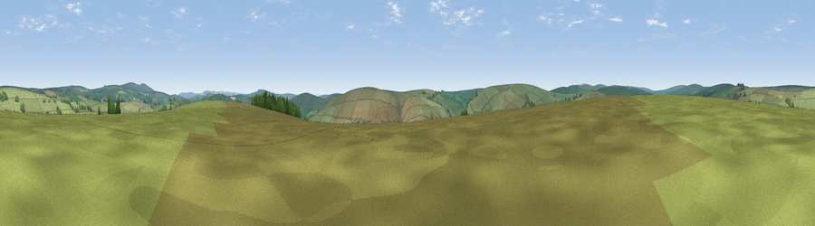

Viewpoint near Withypool
#30349 in England · top 68% of its area beats it · near WithypoolWhere it is
The exact computed spot (SS 81025 37475). Click the marker for map links.
The view, rendered

A 360° render of this exact spot computed from the terrain model, tree cover and land cover — summer colours, afternoon light, calibrated against photographs of famous viewpoints. Real trees, hedges and buildings will differ in detail.
The panorama
Grey silhouette: terrain skyline in each direction (720 bearings, Earth curvature and refraction included). Dashed green: skyline with trees (+15 m) and buildings (+8 m) as obstacles. Blue strip: how far the ground is visible on each bearing.
Where the view opens
Wedge length = distance to the farthest visible ground on that bearing (vegetation-aware). Rings at 10, 25 and 50 km.
What fills the view
97% grassland · 3% woodland ·
Angular shares of the visible panorama (visual magnitude), not map area. Landscape diversity 0.07 (0–1 Shannon).
Key numbers
More beautiful places nearby
The staircase of upgrades: each row has a higher view potential than everything closer. Driving times are estimates from straight-line distance, calibrated against real road routing — check an actual route before setting out.
| Place | Direction | Drive | Score |
|---|---|---|---|
| Withypool Common | SSE · 3 km | ~6 min | 60.0 |
| Viewpoint near Simonsbath | SW · 3 km | ~7 min | 64.8 |
| Viewpoint near Twitchen | SSW · 6 km | ~13 min | 69.1 |
| Viewpoint near Simonsbath | WSW · 6 km | ~14 min | 73.1 |
| Viewpoint near Brayford | W · 8 km | ~16 min | 74.1 |
| Viewpoint near Exford | ENE · 8 km | ~16 min | 77.1 |
| Viewpoint near Luccombe | ENE · 9 km | ~18 min | 84.5 |
| Viewpoint near Porlock | NNE · 10 km | ~19 min | 86.3 |
51.12416, -3.70146 · source: screening · position refined by local search. Computed location — check access rights before visiting.